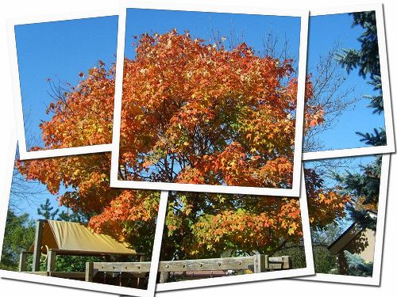

Someone loves the color of the sky! --Shot by someone

Days like this in Nanjing are getting less and less. I miss days like this a lot.
“Neck of the woods” refers to any neighborhood, area or communities, In Chinese,“小区”
这个小区的名字有意思~ 南京难得见到有哪个小区种植这么高的树木，拥有这么清澈的蓝天。谢谢提供这片蓝天，呵呵~
国外的天比中国的清澈薇蓝，国外的月亮也比中国的又大又圆又亮，不是说笑话是真事，因为中国现在污染太严重了。还记得２０多年前我父亲带我在路边指天上的星星银河，现在中国的父亲恐怕没几个能做到了吧。还记得出国前看动画片The Simpsons一开场时云开见蓝天的时候我觉得动画里的天蓝的很假，我根本不相信天能蓝成那个颜色，出国后才知道原来国外的天真就是这种蓝色的！
我心目中一直有个疑问：南京究竟是从来没有蓝天还是最近几年才没有的蓝天？ 因为朋友的解释是由于靠着湖和江，水气太旺才没有的蓝天。
靠着湖和江？哪个南京老乡给出这么奇怪的原因？ 那在大海边上不是更看不到蓝天了？
chickli, 真是可怜了你们这一代人! 当你们刚刚有记得忆的时候, 南京的天空就已经被糟蹋了. 改革开放使得经济发展了,但是也夺走我们的蓝天和健康.
存档只读，评论已关闭。
Name (required)
Email (will not be published) (required)
Website
« 无题 | 岳敏君.作品 »
6 Responses to ““neck of the woods””
2007-10-24
Days like this in Nanjing are getting less and less. I miss days like this a lot.
“Neck of the woods” refers to any neighborhood, area or communities,
In Chinese,“小区”
2007-10-25
这个小区的名字有意思~
南京难得见到有哪个小区种植这么高的树木，拥有这么清澈的蓝天。谢谢提供这片蓝天，呵呵~
2007-10-26
国外的天比中国的清澈薇蓝，国外的月亮也比中国的又大又圆又亮，不是说笑话是真事，因为中国现在污染太严重了。还记得２０多年前我父亲带我在路边指天上的星星银河，现在中国的父亲恐怕没几个能做到了吧。还记得出国前看动画片The Simpsons一开场时云开见蓝天的时候我觉得动画里的天蓝的很假，我根本不相信天能蓝成那个颜色，出国后才知道原来国外的天真就是这种蓝色的！

2007-10-26
我心目中一直有个疑问：南京究竟是从来没有蓝天还是最近几年才没有的蓝天？
因为朋友的解释是由于靠着湖和江，水气太旺才没有的蓝天。
2007-10-26
靠着湖和江？哪个南京老乡给出这么奇怪的原因？
那在大海边上不是更看不到蓝天了？
2007-10-27
chickli,
真是可怜了你们这一代人! 当你们刚刚有记得忆的时候, 南京的天空就已经被糟蹋了. 改革开放使得经济发展了,但是也夺走我们的蓝天和健康.
Leave A Reply
存档只读，评论已关闭。